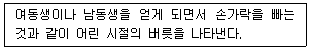
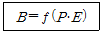
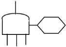
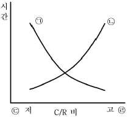
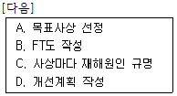
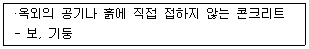
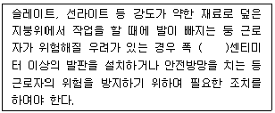
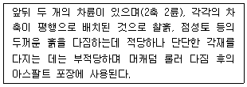
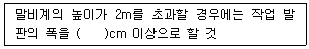

건설안전산업기사 (2017-03-05 기출문제)
1과목: 산업안전관리론
1. 적응기제(Adjustment Mechanism) 의 도피적 행동인 고립에 해당하는 것은?
- 운동시합에서 진 선수가 컨디션이 좋지 않았다고 말한다.
- 키가 작은 사람이 키 큰 친구들과 같이 사진을 찍으려 하지 않는다.
- 자녀가 없는 여교사가 아동교육에 전념하게 되었다.
- 동생이 태어나자 형이 된 아이가 말을 더듬는다.
(정답률: 83%)

2. 허츠버그(Herzberg)의 동기·위생 이론에 대한 설명으로 옳은 것은?
- 위생요인은 직무내용에 관련된 요인이다.
- 동기요인은 직무에 만족을 느끼는 주요인이다.
- 위생요인은 매슬로우 욕구단계 중 존경, 자아실현의 욕구와 유사하다.
- 동기요인은 매슬로우 욕구단계 중 생리적욕구와 유사하다.
(정답률: 71%)
3. 안전교육 훈련기법에 있어 태도 개발 측면에서 가장 적합한 기본교육 훈련방식은?
- 실습방식
- 제시방식
- 참가방식
- 시뮬레이션방식
(정답률: 66%)
4. 연평균 근로자수가 1000 명인 사업장에서 연간 6건의 재해가 발생한 경우, 이 때의 도수율은? (단, 1일 근로시간수는 4시간, 연평균 근로일 수는 150일이다.)
- 1
- 10
- 100
- 1000
(정답률: 68%)
5. 무재해운동의 추진을 위한 3요소에 해당하지 않는 것은?
- 모든 위험잠재요인의 해결
- 최고경영자의 경영자세
- 관리감독자(Line)의 적극적 추진
- 직장 소집단의 자주활동 활성화
(정답률: 68%)
6. 교육의 효과를 높이기 위하여 시청각 교재를 최대한으로 활용하는 시청각적 방법의 필요성이 아닌 것은?
- 교재의 구조화를 기할 수 있다.
- 대량 수업체제가 확립될 수 있다.
- 교수의 평준화를 기할 수 있다.
- 개인차를 최대한으로 고려할 수 있다.
(정답률: 75%)
7. 무재해운동의 추진기법 중 위험예지훈련의 4라운드 중 2라운드 진행방법에 해당하는 것은?
- 본질추구
- 목표설정
- 현상파악
- 대책수립
(정답률: 81%)
8. 다음과 같은 스트레스에 대한 반응은 무엇에 해당하는가?

- 투사
- 억압
- 승화
- 퇴행
(정답률: 81%)
9. 산업안전보건법령상 안전·보건표지에 관한 설명으로 틀린 것은?
- 안전·보건표지 속의 그림 또는 부호의 크기는 안전·표지의 크기와 비례하여야하며, 안전·보건표지 전체 규격의 30%이상이 되어야 한다.
- 안전·보건표지 색채의 물감은 변질되지 아니하는 것에 색채고정 원료를 배합하여 사용하여야 한다.
- 안전·보건표지는 그 표시 내용을 근로자가 빠르고 쉽게 알아볼 수 있는 크기로 제작하여야 한다.
- 안전·보건표지에는 야광물질을 사용하여서는 아니된다.
(정답률: 86%)
10. 인간의 행동 특성에 관한 레빈(Lewin)의 법칙에서 각 인자에 대한 내용으로 틀린 것은?

- B : 행동
- f : 함수관계
- P : 개체
- E : 기술
(정답률: 75%)
11. 산업안전보건법령상 일용근로자의 안전·보건 교육과정별 교육시간 기준으로 틀린 것은?
- 채용시의 교육 : 1시간 이상
- 작업내용 변경 시의 교육 : 2시간 이상
- 건설업 기초안전·보건교육(건설 일용근로자) : 4시간
- 특별교육 : 2시간 이상(흙막이 지보공의 보강 또는 동바리를 설치하거나 해체하는 작업에 종사하는 일용근로자)
(정답률: 71%)
12. 산업안전보건법령상 안전인증대상 기계·기구들이 아닌 것은?
- 프레스
- 전단기
- 롤러기
- 산업용 원심기
(정답률: 68%)
13. 산업안전보건법상 고용노동부장관이 산업재해 예방을 위하여 종합적인 개선조치를 할 필요가 있다고 인정할 때에 안전보건개선계획의 수립·시행을 명할 수 있는 대상 사업장이 아닌 것은?
- 산업재해율이 같은 업종의 규모별 평균 산업재해율보다 높은 사업장
- 사업주가 안전보건조치의무를 이행하지 아니하여 중대재해가 발생한 사업장
- 고용노동부장관이 관보 등에 고시한 유해인자의 노출기준을 초과한 사업장
- 경미한 재해가 다발로 발생한 사업장
(정답률: 80%)
14. 조직이 리더에게 부여하는 권한으로 볼 수 없는 것은?
- 보상적 권한
- 강압적 권한
- 합법적 권한
- 위임된 권한
(정답률: 74%)
15. 재해의 기본원인 4M에 해당하지 않는 것은?
- Man
- Machine
- Media
- Measurement
(정답률: 75%)
16. 억측판단의 배경이 아닌 것은?
- 생략 행위
- 초조한 심정
- 희망적 관측
- 과거의 성공한 경험
(정답률: 55%)
17. 재해의 원인과 결과를 연계하여 상호 관계를 파악하기 위해 도표화하는 분석방법은?
- 특성요인도
- 파레토도
- 크로스분류도
- 관리도
(정답률: 64%)
18. 개인 카운슬링(Counseling) 방법으로 가장 거리가 먼 것은?
- 직접적 충고
- 설득적 방법
- 설명적 방법
- 반복적 충고
(정답률: 68%)
19. 보호구 안전인증 고시에 따른 안전모의 일반 구조 중 턱끈의 최소 폭 기준은?
- 5 mm 이상
- 7 mm 이상
- 10 mm 이상
- 12 mm 이상
(정답률: 66%)
20. 산업안전보건법령상 사업주가 근로자에 대하여 실시하여야 하는 교육 중 특별안전·보건교육의 대상이 되는 작업이 아닌 것은?
- 화학설비의 탱크 내 작업
- 전압이 30 V인 정전 및 활선작업
- 건설용 리프트·곤돌라를 이용한 작업
- 동력에 의하여 작동되는 프레스기계를 5대 이상 보유한 사업장에서 해당 기계로 하는 작업
(정답률: 79%)
2과목: 인간공학 및 시스템안전공학
21. 작업장 내의 색채조절이 적합하지 못한 경우에 나타나는 상황이 아닌 것은?
- 안전표지가 너무 많아 눈에 거슬린다.
- 현란한 색배합으로 물체 식별이 어렵다.
- 무채색으로만 구성되어 중압감을 느낀다.
- 다양한 색채를 사용하면 작업의 집중도가 높아진다.
(정답률: 76%)
22. 청각적 표시장치에서 300 m 이상의 장거리용 경보기에 사용하는 진동수로 가장 적절한 것은?
- 800 Hz 전후
- 2200 Hz 전후
- 3500 Hz 전후
- 4000 Hz 전후
(정답률: 52%)
23. 지게차 인장벨트의 수명은 평균이 1000000 시간, 표준편차가 500 시간인 정규분포를 따른다. 이 인장벨트의 수명이 101000시간 이상일 확률은 약 얼마인가? (단, P(Z≤1) = 0.8413, P(Z≤2) = 0.9772, P(Z≤3) = 0.9987 이다.)
- 1.60 %
- 2.28 %
- 3.28 %
- 4.28 %
(정답률: 53%)
24. 반복되는 사건이 많이 있는 경우에 FTA 의 최소 컷셋을 구하는 알고리즘이 아닌 것은?
- Fussel Algorithm
- Boolean Algorithm
- Monte Carlo Algorithm
- Limnios & Ziani Algorithm
(정답률: 77%)
25. 인체계측 자료에서 주로 사용하는 변수가 아닌 것은?
- 평균
- 5 백분위수
- 최빈값
- 95 백분위수
(정답률: 65%)
26. 산업안전보건법에서 규정하는 근골격계 부담작업의 범위에 해당하지 않는 것은?
- 단기간작업 또는 간헐적인 작업
- 하루에 10회 이상 25kg 이상의 물체를 드는 작업
- 하루에 총 2시간 이상 쪼그리고 앉거나 무릎을 굽힌 자세에서 이루어지는 작업
- 하루에 4시간 이상 집중적으로 자료입력 등을 위해 키보드 또는 마우스를 조작하는 작업
(정답률: 78%)
27. FT도에 사용되는 다음 기호의 명칭으로 맞는 것은?

- 억제 게이트
- 부정 게이트
- 배타적 OR 게이트
- 우선적 AND 게이트
(정답률: 65%)
28. 어떤 작업자의 배기량을 측정하였더니, 10분간 200 L 이었고, 배기량을 분석한 결과 O2 : 16%, CO2 : 4% 였다. 분당 산소 소비량은 약 얼마인가?
- 1.⑤ L/분
- 2.⑤ L/분
- 3.⑤ L/분
- 4.⑤ L/분
(정답률: 33%)
29. 인간공학에 관련된 설명으로 틀린 것은?
- 편리성, 쾌적성, 효율성을 높일 수 있다.
- 사고를 방지하고 안전성과 능률성을 높일 수 있다.
- 인간의 특성과 한계점을 고려하여 제품을 설계 한다.
- 생산성을 높이기 위해 인간을 작업 특성에 맞추는 것이다.
(정답률: 74%)
30. 인간의 가청주파수 범위는?
- 2~10000 Hz
- 20~20000 Hz
- 200~30000 Hz
- 200~40000 Hz
(정답률: 71%)
31. 산업안전보건법령에서 정한 물리적 인자의 분류기준에 있어서 소음은 소음성난청을 유발할 수 있는 몇 dB(A) 이상의 시끄러운 소리로 규정하고 있는가?
- 70
- 85
- 100
- 115
(정답률: 73%)
32. 1cd의 점광원에서 1m 떨어진 곳에서의 조도가 3 lux 이었다. 동일한 조건에서 5m 떨어진 곳에서의 조도는 약 몇 lux 인가?
- 0.12
- 0.22
- 0.36
- 0.56
(정답률: 45%)
33. 위험처리 방법에 관한 설명으로 틀린 것은?
- 위험처리 대책 수립시 비용문제는 제외된다.
- 재정적으로 처리하는 방법에는 보류와 전가 방법이 있다.
- 위험의 제어 방법에는 회피, 손실제어, 위험분리, 책임 전가 등이 있다.
- 위험처리 방법에는 위험을 제어하는 방법과 재정적으로 처리하는 방법이 있다.
(정답률: 73%)
34. 다음 그림은 C/R비와 시간과의 관계를 나타낸 그림이다. ㉠~㉣에 들어갈 내용이 맞는 것은?

- ㉠ 이동시간 ㉡ 조정시간 ㉢ 민감 ㉣ 둔감
- ㉠ 이동시간 ㉡ 조정시간 ㉢ 둔감 ㉣ 민감
- ㉠ 조정시간 ㉡ 이동시간 ㉢ 민감 ㉣ 둔감
- ㉠ 조정시간 ㉡ 이동시간 ㉢ 둔감 ㉣ 민감
(정답률: 51%)
35. 인터페이스 설계 시 고려해야 하는 인간과 기계와의 조화성에 해당되지 않는 것은?
- 지적 조화성
- 신체적 조화성
- 감성적 조화성
- 심미적 조화성
(정답률: 61%)
36. FTA에 의한 재해사례 연구의 순서를 올바르게 나열한 것은?

- A→B→C→D
- A→C→B→D
- B→C→A→D
- B→A→C→D
(정답률: 67%)
37. 기능식 생산에서 유연생산 시스템 설비의 가장 적합한 배치는?
- 합류(Y)형 배치
- 유자(U)형 배치
- 일자(－)형 배치
- 복수라인(〓)형 배치
(정답률: 70%)
38. 설비나 공법 등에서 나타날 위험에 대하여 정성적 또는 정량적인 평가를 행하고 그 평가에 따른 대책을 강구하는 것은?
- 설비보전
- 동작분석
- 안전계획
- 안전성 평가
(정답률: 63%)
39. 모든 시스템 안전 프로그램 중 최초 단계의 분석으로 시스템 내의 위험요소가 어떤 상태에 있는지를 정성적으로 평가하는 방법은?
- CA
- FHA
- PHA
- FMEA
(정답률: 62%)
40. 인간-기계 체계에서 인간의 과오에 기인된 원인 확률을 분석하여 위험성의 예측과 개선을 위한 평가 기법은?
- PHA
- FMEA
- THERP
- MORT
(정답률: 71%)
3과목: 건설시공학
41. 토질시험 중 흙 속에 수분이 거의 없고 바삭바삭한 상태의 정도를 알아보기 위한 것은?
- 함수비시험
- 소성한계시험
- 액성한계시험
- 압밀시험
(정답률: 58%)
42. 450m3의 콘크리트를 타설할 경우 강도시험용 1회의 공시체는 몇 m3 마다 제작하는가? (단, KS 기준)
- 30m3
- 50m3
- 100m3
- 150m3
(정답률: 57%)
43. 철골조 용접 공작에서 용접봉의 피복제 역할로 옳지 않은 것은?
- 함유 원소를 이온화하여 아크를 안정시킨다.
- 용착 금속에 합금 원소를 가한다.
- 용착 금속의 산화를 촉진하여 고열을 발생시킨다.
- 용융 금속의 탈산, 정련을 한다.
(정답률: 68%)
44. 공사계획에 있어서 공법 선택 시 고려할 사항과 가장 거리가 먼 것은?
- 공구 분할의 결정
- 품질 확보
- 공기 준수
- 작업의 안전성 확보의 제3자 재해의 방지
(정답률: 66%)
45. 설계· 시공 일괄계약제도에 관한 설명으로 옳지 않은 것은?
- 단계별 시공의 적용으로 전체 공사기간의 단축이 가능하다.
- 설계와 시공의 책임 소재가 일원화된다.
- 발주자의 의도가 충분히 반영될 수 있다.
- 계약체결시 총 비용이 결정되지 않으므로 공사비용이 상승할 우려가 있다.
(정답률: 61%)
46. 콘크리트 타설시 다짐에 대한 설명으로 옳지 않은 것은?
- 내부진동기는 슬럼프가 15cm 이하일 때 사용하는 것이 좋다.
- 슬럼프가 클수록 오래 다지도록 한다.
- 진동기를 인발할 때에는 진동을 주면서 천천히 뽑아 콘크리트에 구멍을 남기지 않도록 한다.
- 콘크리트 다짐 시 철근에 진동을 주지 않는다.
(정답률: 62%)
47. 한 구획 전체의 벽판과 바닥판을 ㄱ 자형 또는 ㄷ자형으로 짜서 이동시키는 형태의 기성재 거푸집은?
- 슬라이딩 폼(Sliding Form)
- 터널 폼(Tunnel Form)
- 유로 폼(Euro Form)
- 워플 폼(Waffle Form)
(정답률: 67%)
48. 수직굴착, 수중굴착 등 일반적으로 협소한 장소의 깊은 굴착에 적합한 것으로 자갈 등의 적재에도 사용하는 토공장비는?
- 클램쉘
- 불도저
- 캐리올 스크레이퍼
- 로더
(정답률: 78%)
49. 프리스트레스하지 않는 부재의 현장치기 콘크리트에서 다음과 같은 조건을 가진 부재의 최소 피복두께로서 옳은 것은?

- 30mm
- 40mm
- 50mm
- 60mm
(정답률: 51%)
50. 철골부재의 내화피복에 관한 설명으로 옳지 않은 것은?
- 뿜칠공법은 큰 면적의 내화피복을 단시간에 시공할 수 있다.
- 성형판 붙임공법은 주로 기둥과 보의 내화 피복에 사용된다.
- 타설공법은 임의의 치수와 형상의 내화피복이 가능하다.
- 미장공법은 바탕작업이 단순하고 양생에 소요 되는 시간이 짧다.
(정답률: 60%)
51. 철근콘크리트구조 시공 시 콘크리트 이어붓기 위치에 관한 설명으로 옳지 않은 것은?
- 기둥이음은 기둥의 중간에서 수평으로 한다.
- 아치의 이음은 아치축에 직각으로 설치한다.
- 보,바닥판이음은 그 스팬의 중앙 부근에서 수직으로 한다.
- 벽은 개구부 등 끊기 좋은 위치에서 수직 또는 수평으로 한다.
(정답률: 46%)
52. 굳지 않은 콘크리트에 실시하는 시험이 아닌 것은?
- 슬럼프시험
- 플로우시험
- 슈미트해머시험
- 리몰딩시험
(정답률: 72%)
53. 공동도급(Joint Venture Contract)의 이점이 아닌 것은?
- 융자력의 증대
- 위험부담의 분산
- 기술의 확충,강화 및 경험의 증대
- 이윤의 증대
(정답률: 77%)
54. 탑다운(top-down) 공법에 관한 설명으로 옳지 않은 것은?
- 1층 바닥을 조기에 완성하여 작업장 등으로 사용할 수 있다.
- 지하·지상을 동시에 시공하여 공기단축이 가능하다.
- 소음·진동이 심하고 주변구조물의 침하 우려가 크다.
- 기둥·벽 등 수직부재의 구조이음에 기술적 어려움이 있다.
(정답률: 60%)
55. 공공 혹은 공익 프로젝트에 있어서 자금을 조달하고, 설계, 엔지니어링 및 시공 전부를 도급 받아 시설물을 완성하고 그 시설을 일정기간 운영하여 투자금을 회수한 후 발주자에게 시설을 인도하는 공사계약방식은?
- CM 계약 방식
- 공동도급 방식
- 파트너링 방식
- BOT 방식
(정답률: 69%)
56. 기성콘크리트말뚝을 타설할 때 그 중심간격의 기준으로 옳은 것은?
- 말뚝머리 지름의 2.5 배 이상 또한 600mm 이상
- 말뚝머리 지름의 2.5 배 이상 또한 750mm 이상
- 말뚝머리 지름의 3.0 배 이상 또한 600mm 이상
- 말뚝머리 지름의 3.0 배 이상 또한 750mm 이상
(정답률: 72%)
57. 표준관입시험에 관한 설명으로 옳은 것은?
- 해머의 무게는 73.5kg 이다.
- 해머의 낙하 높이는 100cm 이다.
- 점토지반에서 실시하여도 높은 신뢰성을 얻을 수 있다.
- N값이 클수록 밀실한 토질이다.
(정답률: 66%)
58. Under Pinning 공법을 적용하기에 부적합한 경우는?
- 인접 지상구조물의 철거 시
- 지하구조물 밑에 지중구조물을 설치할 때
- 기존구조물에 근접한 굴착 시 구조물의 침하나 경사를 미연에 방지할 경우
- 기존구조물의 지지력 부족으로 건물에 침하나 경사가 생겼을 때 이것을 복원하는 경우
(정답률: 58%)
59. 흙막이벽 설계 시 고려하지 않아도 되는 것은?
- 히빙(heaving)
- 보일링(boiling)
- 파이핑(piping)
- 사운딩(sounding)
(정답률: 73%)
60. 철근공사의 철근트러스 입체화 공법의 특징이 아닌 것은?
- 현장조립의 거푸집공사를 공장제 기성품으로 대체
- 구조적 안정성 확보
- 가설작업장의 면적 증가
- Support 감소, 지보공수량 감소로 작업의 안전성
(정답률: 60%)
4과목: 건설재료학
61. 콘크리트의 블리딩 현상에 대한 설명 중 옳지 않은 것은?
- 콘크리트의 컨시스턴시가 클수록 블리딩은 증대한다.
- AE 콘크리트는 보통콘크리트에 비하여 블리딩 현상이 적다.
- 블리딩 현상에 의해 떠오른 미립물은 상호간 접착력을 증대시킨다.
- 콘크리트 면이 침하되어 콘크리트 균열의 원인이 된다.
(정답률: 69%)
62. 건축재료 중 압축강도가 일반적으로 가장 큰 것부터 작은 순서대로 나열된 것은?
- 화강암-보통콘크리트-시멘트벽돌-참나무
- 보통콘크리트-화강암-참나무-시멘트벽돌
- 화강암-참나무-보통콘크리트-시멘트벽돌
- 보통콘크리트-참나무-화강암-시멘트벽돌
(정답률: 56%)
63. 목재의 특징으로 옳지 않은 것은?
- 가연성이다.
- 진동 감속성이 작다.
- 섬유포화점 이하에서 함수율 변동에 따라 변형이 크다.
- 콘크리트 등 다른 건축재료에 비해 내구성이 약하다.
(정답률: 47%)
64. 콘크리트의 성질에 관한 설명을 옳지 않은 것은?
- 화재 시 결합수를 방출하므로 강도가 저하된다.
- 수밀 콘크리트를 만들려면 된 비빔 콘크리트를 사용한다.
- 수밀성이 큰 콘크리트는 중성화작용이 적어진다.
- 콘크리트의 열팽창계수는 철에 비해서 매우 작다.
(정답률: 54%)
65. 비철금속에 관한 설명으로 옳지 않은 것은?
- 비철금속은 철 이외의 금속을 말한다.
- 철금속에 비하여 내식성이 우수하고 경량이다.
- 가공이 용이하여 건축용 장식에도 사용된다.
- 비철금속의 종류는 철강과 탄소강이 있다.
(정답률: 62%)
66. 목재 기건상태의 함수율은 약 얼마인가?
- 15%
- 30%
- 45%
- 60%
(정답률: 66%)
67. 점토소성제품의 흡수성이 큰 것부터 순서대로 올바르게 나열된 것은?
- 토기 ＞ 도기 ＞ 석기 ＞ 자기
- 토기 ＞ 도기 ＞ 자기 ＞ 석기
- 도기 ＞ 토기 ＞ 석기 ＞ 자기
- 도기 ＞ 토기 ＞ 자기 ＞ 석기
(정답률: 74%)
68. 흙바름재의 바탕에 바름하는 재래식 재료가 아닌 것은?
- 진흙
- 새벽흙
- 짚여물
- 고무 라텍스
(정답률: 81%)
69. 각종 미장재료에 대한 설명으로 옳지 않은 것은?
- 석고플라스터는 가열하면 결정수를 방출하여 온도상승을 억제하기 때문에 내화성이 있다.
- 바라이트 모르타르는 방사선 방호용으로 사용 된다.
- 돌로마이트 플라스터는 수축률이 크고 균열이 쉽게 발생한다.
- 혼합석고플라스터는 약산성이며 석고라스보드에 적합하다.
(정답률: 43%)
70. 아스팔트 방수공사 시 바탕처리에 관한 설명으로 옳지 않은 것은?
- 바탕면을 충분히 건조시킬 것
- 바탕면에 물흘림 경사를 충분히 둘 것
- 바탕면을 거칠게 마무리할 것
- 구석, 모서리 등을 둥글게 처리할 것
(정답률: 73%)
71. 콘크리트용 시멘트에 관한 설명을 옳지 않은 것은?
- 콘크리트강도는 물시멘트비에 영향을 받지 않는다.
- 고로시멘트와 실리카시멘트는 보통포틀랜드 시멘트보다 수화작용이 느려서 초기강도가 작다.
- 시멘트의 분말도가 클수록 초기 콘크리트강도 발현이 빠르다.
- 알루미나시멘트, 고로시멘트, 실리카시멘트는 내해수성이 크다.
(정답률: 74%)
72. 중용열 포틀랜드시멘트에 관한 설명으로 옳지 않은 것은?
- 수축이 작고 화학저항성이 일반적으로 크다.
- 매스콘크리트 등에 사용된다.
- 단기강도는 보통포틀랜드시멘트보다 낮다.
- 긴급공사, 동절기 공사에 주로 사용된다.
(정답률: 56%)
73. 콘크리트 면에 주로 사용하는 도장재료는?
- 오일페인트
- 합성수지 에멀션페인트
- 래커에나멜
- 에나멜페인트
(정답률: 57%)
74. 시멘트 종류에 따른 사용용도를 나타낸 것으로 옳지 않은 것은?
- 조강 포틀랜드시멘트 - 한중공사
- 중용열 포틀랜드시멘트 – 매스콘크리트 및 댐 공사
- 고로시멘트 – 타일 줄눈공사
- 내황산염 포틀랜드시멘트 – 온천지대나 하수도공사
(정답률: 64%)
75. 강에 함유된 탄소량의 증감과 관련이 없는 것은?
- 경도의 증감
- 내산, 내알칼리성의 증감
- 인장강도의 증감
- 연성(신장률)의 증감
(정답률: 56%)
76. 목재의 건조속도에 관한 설명으로 옳지 않은 것은?
- 습도가 높을수록 건조속도는 늦어진다.
- 온도가 높을수록 건조속도가 빠르다.
- 목재의 비중이 클수록 건조속도는 빠르다.
- 목재의 두께가 두꺼울수록 건조시간이 길어진다.
(정답률: 76%)
77. 석재 백화현상의 원인이 아닌 것은?
- 빗물처리가 불충분한 경우
- 줄눈시공이 불충분한 경우
- 줄눈폭이 큰 경우
- 석재 배면으로부터의 누수에 의한 경우
(정답률: 68%)
78. 다음 목재 중 실내 치장용으로 사용하기에 적합하지 않은 것은?
- 느티나무
- 단풍나무
- 오동나무
- 소나무
(정답률: 69%)
79. 점토광물 중 적갈색으로 내화성이 부족하고 보통벽돌, 기와, 토관의 원료로 사용되는 것은?
- 석기점토
- 사질점토
- 내화점토
- 자토
(정답률: 54%)
80. 발포제로서 보드상으로 성형하여 단열재로 널리 사용되며 천장재, 전기용품 등에도 쓰이는 열가소성 수지는?
- 폴리스티렌수지
- 실리콘수지
- 폴리에스테르수지
- 요소수지
(정답률: 40%)
5과목: 건설안전기술
81. 건설업 산업안전보건관리비의 안전시설비로 사용가능하지 않은 항목은?
- 비계·통로·계단에 추가 설치하는 추락방지용 안전난간
- 공사수행에 필요한 안전통로
- 틀비계에 별도로 설치하는 안전난간·사다리
- 통로의 낙하물 방호선반
(정답률: 57%)
82. 고소작업대가 갖추어야 할 설치조건으로 옳지 않은 것은?
- 작업대를 와이어로프 또는 체인으로 올리거나 내릴 경우에는 와이어로프 또는 체인이 끊어져 작업대가 떨어지지 아니하는 구조여야하며, 와이어로프 도는 체인의 안전율은 3이상일 것
- 작업대를 유압에 의해 올리거나 내릴 경우에는 작업대를 일정한 위치에 유지할 수 있는 장치를 갖추고 압력의 이상저하를 방지할 수 있는 구조일 것
- 작업대에 끼임·충돌 등 재해를 예방하기 위한 가드 또는 과상승방지장치를 설치할 것, 위치에 유지할 수 있는 장치를 갖추고 압력의 이상저하를 방지할 수 있는 구조일 것
- 작업대에 정격하중(안전율 5이상)을 표시할 것
(정답률: 68%)
83. 콘크리트 타설작업을 하는 경우에 준수해야 할 사항으로 옳지 않은 것은?
- 당일의 작업을 시작하기 전에 해당 작업에 관한 거푸집동바리등의 변형·변위 및 지반의 침하 유무 등을 점검하고 이상이 있으면 보수할 것
- 작업 중에는 거푸집동바리등의 변형·변위 및 침하 유무 등을 감시할 수 있는 감시자를 배치하여 이상이 있으면 작업을 중지하고 근로자를 대피시킬 것
- 설계도서상의 콘크리트 양생기간을 준수하여 거푸집동바리등을 해체할 것
- 콘크리트를 타설하는 경우에는 편심을 유발하여 한쪽 부분부터 밀실하게 타설되도록 유도할 것
(정답률: 77%)
84. 건설업에서 사업주의 유해·위험 방지 계획서 제출 대상 사업장이 아닌 것은?
- 지상 높이가 31m 이상인 건축물의 건설, 개조 또는 해체공사
- 연면적 5000m2이상 관광숙박시설의 해체공사
- 저수용량 5000톤 이하의 지방상수도 전용 댐건설 등의 공사
- 깊이 10m 이상인 굴착공사
(정답률: 62%)
85. 이동식비계를 조립하여 작업을 하는 경우의 준수사항으로 옳지 않은 것은?
- 이동식비계의 바퀴에는 뜻밖의 갑작스러운 이동 또는 전도를 방지하기 위하여 브레이크·쐐기 등으로 바퀴를 고정시킨 다음 비계의 일부를 견고한 시설물에 고정하거나 아웃트리거(outrigger)를 설치하는 등 필요한 조치를 할 것
- 작업발판은 항상 수평을 유지하고 작업발판 위에서 안전난간을 딛고 작업을 하지 않도록하며, 대신 받침대 또는 사다리를 사용하여 작업할 것
- 비계의 최상부에서 작업을 하는 경우에는 안전난간을 설치할 것
- 작업발판의 최대적재하중은 250kg을 초과하지 않도록 할 것
(정답률: 56%)
86. 추락방지망의 방망 지지점은 최소 얼마 이상의 외력에 견딜 수 있는 강도를 보유하여야 하는가?
- 500kg
- 600kg
- 700kg
- 800kg
(정답률: 49%)
87. 거푸집동바리등을 조립하거나 해체하는 작업을 하는 경우 준수사항으로 옳지 않은 것은?
- 해당 작업을 하는 구역에는 관계 근로자가 아닌 사람의 출입을 금지할 것
- 비, 눈, 그 밖의 기상상태의 불안정으로 날씨가 몹시 나쁜 경우에는 그 작업을 중지할 것
- 낙하·충격에 의한 돌발적 재해를 방지하기 위하여 버팀목을 설치하고 거푸집동바리등을 인양 장비에 매단 후에 작업을 하도록 하는 등 필요한 조치를 할 것
- 재료,기구 또는 공구 등을 올리거나 내리는 경우에는 근로자로 하여금 달줄·달포대 등의 사용을 금지하도록 할 것
(정답률: 61%)
88. 아스팔트 포장도로의 노반의 파쇄 또는 토사 중에 있는 암석제거에 가장 적당한 장비는?
- 스크레이퍼(Scraper)
- 롤러(Roller)
- 리퍼(Ripper)
- 드래그라인(Dragline)
(정답률: 63%)
89. 안전방망을 건축물의 바깥쪽으로 설치하는 경우 벽면으로부터 망의 내민 길이는 최소 얼마 이상이어야 하는가?
- 2m
- 3m
- 5m
- 10m
(정답률: 50%)
90. 다음은 산업안전보건법령에 따른 지붕위에서의 위험 방지에 관한 사항이다. ( )안에 알맞은 것은?

- 20
- 25
- 30
- 40
(정답률: 67%)
91. 통나무 비계를 건축물, 공작물 등의 건조·해체 및 조립 등의 작업에 사용하기 위한 지상 높이 기준은?
- 2층 이하 또는 6m 이하
- 3층 이하 또는 9m 이하
- 4층 이하 또는 12m 이하
- 5층 이하 또는 15m 이하
(정답률: 55%)
92. 터널 지보공을 설치한 경우에 수시로 점검하여야 할 사항에 해당하지 않는 것은?
- 기둥침하의 유무 및 상태
- 부재의 긴압 정도
- 매설물 등의 유무 또는 상태
- 부재의 접속부 및 교차부의 상태
(정답률: 61%)
93. 다음에서 설명하고 있는 건설장비의 종류는?

- 클램쉘
- 탠덤 롤러
- 트랙터 셔블
- 드래그 라인
(정답률: 71%)
94. 다음은 산업안전보건법령에 따른 말비계를 조립하여 사용하는 경우에 관한 준수사항이다. ( )안에 알맞은 숫자는?

- 10
- 20
- 30
- 40
(정답률: 57%)
95. 크레인을 사용하여 작업을 하는 경우 준수해야할 사항으로 옳지 않은 것은?
- 인양할 하물(荷物)을 바닥에서 끌어당기거나 밀어 정위치 작업을 할 것
- 유류드럼이나 가스통 등 운반 도중에 떨어져 폭발하거나 누출될 가능성이 있는 위험물 용기는 보관함(또는 보관고)에 담아 안전하게 매달아 운반할 것
- 미리 근로자의 출입을 통제하여 인양 중인 하물이 작업자의 머리 위로 통과하지 않도록 할 것
- 인양할 하물이 보이지 아니하는 경우에는 어떠한 동작도 하지 아니할 것(신호하는 사람에 의하여 작업을 하는 경우는 제외한다)
(정답률: 68%)
96. 작업으로 인하여 물체가 떨어지거나 날아올 위험이 있는 경우 설치하는 낙하물 방지망의 수평면과의 각도 기준으로 옳은 것은?
- 10° 이상 20° 이하를 유지
- 20° 이상 30° 이하를 유지
- 30° 이상 40° 이하를 유지
- 40° 이상 45° 이하를 유지
(정답률: 65%)
97. 굴착작업을 하는 경우 지반의 붕괴 또는 토석의 낙하에 의한 근로자의 위험을 방지하기 위하여 관리감독자로 하여금 작업시작 전에 점검하도록 해야하는 사항과 가장 거리가 먼 것은?
- 부석·균열의 유무
- 함수·용수
- 동결상태의 변화
- 시계의 상태
(정답률: 67%)
98. 굴착공사 중 암질변화구간 및 이상암질 출현 시에는 암질판별시험을 수행하는데 이 시험의 기준과 거리가 먼 것은?
- 함수비
- R.Q.D
- 탄성파속도
- 일축압축강도
(정답률: 45%)
99. 버팀대(Strut)의 축하중 변화상태를 측정하는 계측기는?
- 경사계(Inclino meter)
- 수위계(Water level meter)
- 침하계(Extension)
- 하중계(Load cell)
(정답률: 64%)
100. 철골공사에서 나타나는 용접결함의 종류에 해당하지 않는 것은?
- 가우징(gouging)
- 오버랩(overlap)
- 언더 컷(under cut)
- 블로우 홀(blow hole)
(정답률: 69%)